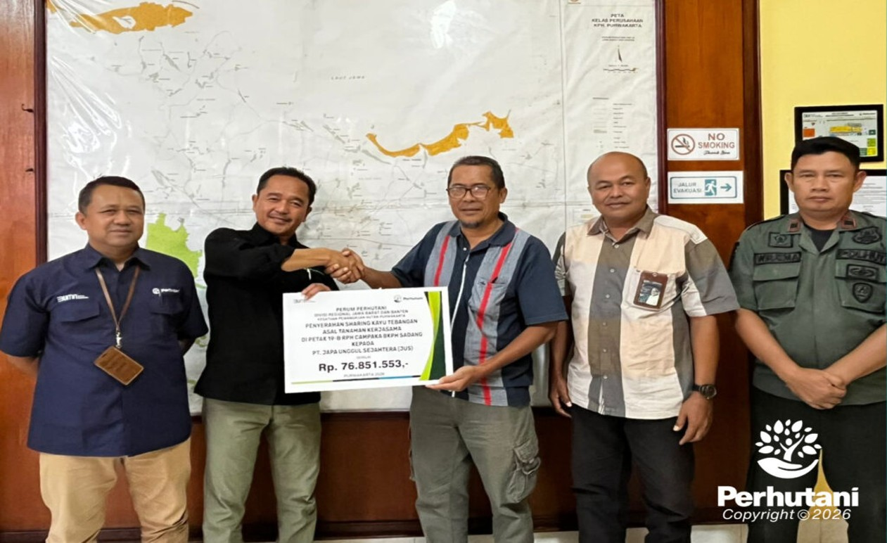

PURWAKARTA, PERHUTANI (09/01/2026) | Dalam rangka optimalisasi pemanfaatan kawasan hutan yang berkelanjutan serta penguatan sinergi kemitraan kehutanan, Perum Perhutani Kesatuan Pemangkuan Hutan (KPH) Purwakarta menyerahkan sharing hasil tebangan Asal kerja sama Di petak 19.B RPH Campaka BKPH Sadang Tahun 2026 kayu jabon kepada PT.Java Unggul Sejahtera (Jus), pada Kamis (08 /01).
Penyerahan sharing hasil tebangan tersebut dilakukan secara langsung oleh Administratur Perhutani KPH Purwakarta Di dampingi oleh Wakil Administratur MUlyana, Kasi Keuangan Dadan Supardan, Danru Polhut Wiratma, bertempat di Aula Kantor Perhutani KPH Purwakarta, dengan total nilai sebesar Rp 76.851.553. Kegiatan ini merupakan implementasi nyata kemitraan kehutanan yang berorientasi pada pemberdayaan masyarakat desa hutan melalui pemanfaatan lahan secara produktif, legal, dan bertanggung jawab.
Administratur Perhutani KPH Purwakarta, Cecep Suryaman. menyampaikan bahwa sharing hasil tebangan merupakan wujud kerja sama antara Perum Perhutani dan masyarakat desa hutan sebagai mitra strategis dalam pengelolaan sumber daya hutan. Menurutnya, masyarakat tidak hanya berperan sebagai penerima manfaat, tetapi juga memiliki tanggung jawab bersama dalam menjaga kelestarian, keamanan, dan keberlanjutan kawasan hutan.
Pemanfaatan kawasan hutan melalui tanaman jabon merupakan pendekatan silvikultur yang adaptif karena memiliki siklus tumbuh relatif cepat serta nilai ekonomi yang kompetitif. Dengan demikian, pengelolaan hutan tidak hanya menopang kelestarian ekosistem, tetapi juga memberikan kontribusi nyata bagi peningkatan perekonomian masyarakat desa hutan,” jelasnya.
Beliau juga menegaskan bahwa aspek kelestarian tetap menjadi prioritas utama. Pengelolaan kawasan hutan dilaksanakan dengan prinsip kelestarian produksi dan perlindungan, sehingga fungsi hutan sebagai penyangga ekologi, penyedia jasa lingkungan, dan sumber daya ekonomi dapat berjalan secara seimbang dan berkelanjutan.
Sementara itu, PT Java Unggul Sejahtera , menyampaikan apresiasi atas kepercayaan dan kesempatan yang diberikan Perhutani KPH Purwakarta. Dalam pengelolaan kawasan hutan, Ia menilai pendampingan teknis dan pembinaan yang dilakukan Perhutani sangat membantu meningkatkan kapasitas masyarakat desa hutan.
Perhutani secara konsisten memberikan pembinaan dan edukasi, mulai dari aspek teknis budidaya hingga tata kelola kawasan hutan, sehingga memiliki pemahaman dan tanggung jawab yang lebih kuat terhadap kelestarian hutan,” ujarnya.
Pada kesempatan yang sama, salah satu investor, mengungkapkan apresiasinya atas kesempatan berkontribusi dalam pengelolaan kawasan hutan melalui skema kemitraan. Ia menyampaikan bahwa pengelolaan tanaman Jabon memerlukan perencanaan matang, mulai dari penanaman, pemeliharaan, hingga proses tebangan dan pemasaran hasil.
Keberhasilan pengelolaan tanaman Jabon tidak terlepas dari dukungan teknis Perhutani, peran aktif masyarakat, serta sinergi seluruh pihak. Kolaborasi inilah yang menjadi kunci agar hasil produksi optimal dan berkelanjutan,” tutupnya.
Melalui kegiatan ini, Perhutani KPH Purwakarta menegaskan komitmennya dalam mengembangkan pengelolaan hutan berbasis kemitraan yang mengedepankan prinsip Keberlanjutan Pemerataan manfaat serta peningkatan kesejahteraan.
Editor: WK
Copyright © 2026 Warta Nusantara Barat